|
|
|
Content :
jLIVE Builder報表系統是視窗畫面設計的延伸，列印資料和範圍皆來自視窗畫面的物件。這種設計方法，必須以視窗畫面中的資料來源為思考方向，因為在每一張報表中皆可指定以一個主要的資料來源為記錄移動的參考，並且在視窗畫面中的資料元件也會同時反應資料來源移動的影響，讓列印的資料如同Live般的感覺。
這樣的設計在絕大部分的情況下，都非常有效率；如果設計者以物件的理念來設計應用程式，將會得到最大的效率。以一個 (客戶管理)
視窗畫面下的報表設計為例，設計者可以設計出和視窗畫面操作同步的報表，比如說，在客戶管理操作【查詢】某一區域的客戶，在視窗畫面中顯示的資料，也等於是列印到報表的資料(某一區域的客戶資料)。
The follow image is report tools bar.
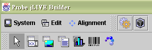
System
Back to Console : 回到jLIVE Builder 主視窗
Save Modified : 存檔
View Java Source : 檢視 java 原始碼
Reload Image : 如果在設計過程中, 有再加入新的圖片或者是修改圖片到 preloadimages 或 images的目錄時, 要使用前必須重新 load 圖進來.
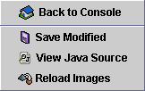
Edit
Copy
Paste
Delete
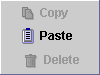
Alignment : A criterion to components position.
Area
Tool Bar : 工具列
Header : 表頭, 報表的標題區
Top Borderline : 表頭基準線, 用來區分表頭和表身的分界線
Report Body : 表身, 列印資料顯示區, 元件與表頭基準線之距離會決定兩筆記錄之間的距離,系統裡是以元件最上緣的定位點與表頭基準線距離來決定下一筆的相隔距離
Below Borderline : 表尾基準線, 用來區分表身和表尾的分界線
Footer : 表尾, 報表的結尾
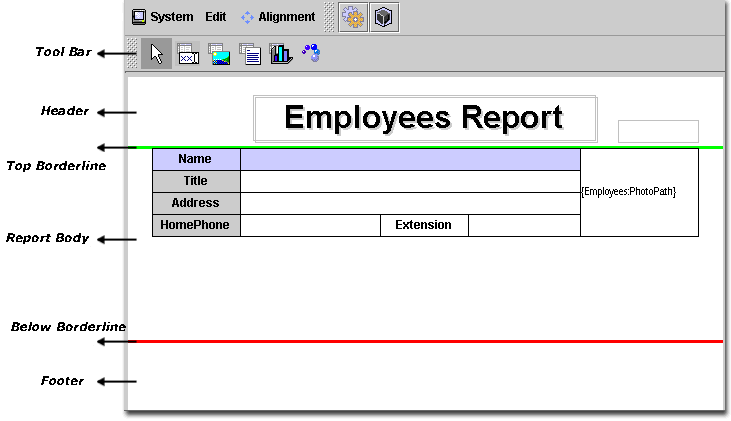
Location
Location dot : 元件的位置及大小, 由像素點來表示
Location inch : 元件的位置及大小, 由英吋來表示
Clip Bounds : 若此選項打勾，則當資料內容的長度超過列印元件的長度時，會自動斷行
Freeze Bounds : 若此選項打勾，則當資料內容的長度超過列印元件的長度時，超過的資料會不出現
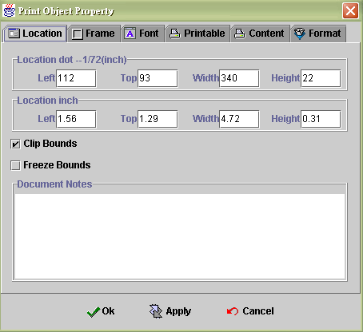
Frame
Left : 左邊界框線
Top : 上邊界框線
Right : 右邊界框線
Bottom : 下邊界框線
Horz Center : 打勾的選項則會列印出框線，水平線
Vert Center : 打勾的選項則會列印出框線，垂直線
Left Top - Right Bottom : 打勾的選項則會列印出框線，左上右下
Right Top - Left Bottom : 打勾的選項則會列印出框線，左下右上
Oval : 橢圓形框線
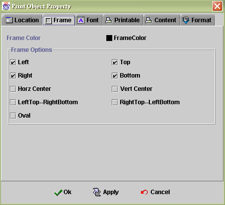
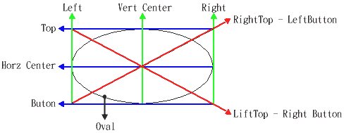
Font
Font Name : 選擇字型
Size : 選擇字型大小
Style
Bold : 粗體
Italic : 斜體
Color
Foreground : 前景顏色
Background : 背景顏色
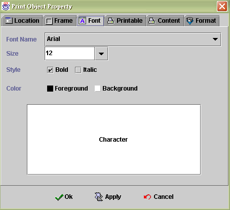
Printable
Print out constraint : 當要使用條件來控制列印與否時, 就選擇此項目
Condition : 依運算式的結果來決定是否列印此元件，當運算式結果為"真"，則列印元件內含值，為"偽"，則不列印
Force to print while first record in new page : 勾選此項則每一頁的第一筆記錄都會列印，縱使"Print out constraint"有設定，而且Formula結果為"偽" 也會被忽略掉。
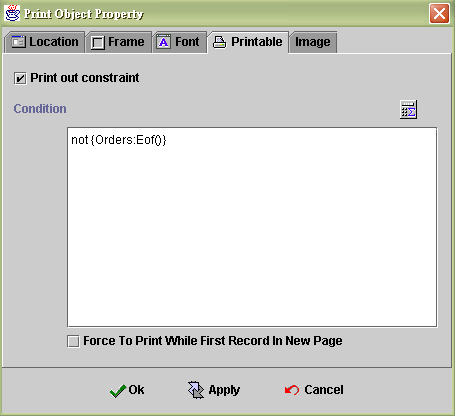
Content
Simple Text : 使用文字敘述當成要列印的內容
Page No : 列印頁碼
Current : 顯示目前列印第幾頁
Total ( Estimate ) : 總頁數, 預估值, 這樣的定義是考量到在Internet 上執行報表列印時，為了效率而做的折衷方式, 因為今天列印時的資料來源可能經過條件選取而不是完整列印, 而且當資料頁數非常龐大時, 不可能將所有資料經網路傳到使用者端後再出現統計頁數, 所以請留心使用
Use Formula : 使用運算式的內含值來列印
Sum Result : 欄位加總功能, 勾選是否要累計運算式的值。(只對數值有效) 選擇累計歸零的時機。
Never : 全部加總, 不歸零
After Print out : 當列印之後歸零
New Page : 當換頁之後歸零
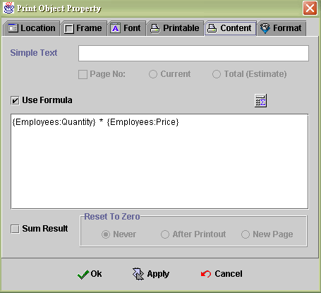
Format
Format Print out : 設定要列印內含值的資料型態及文字位置, 一種資料可以套用不同類型的外觀表現
Render Type : 資料描述模式
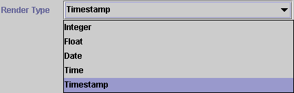
Format : 顯示格式
Alignment Print out
Horizontal : 水平對齊方式
Vertical : 垂直對齊方式
Multi Line :
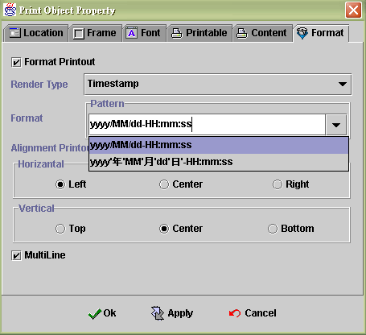
Image 二選一
DataSource : select one datasource
DataField : select one field
Static Image : select one static image 勾選是否要使用圖檔來列印
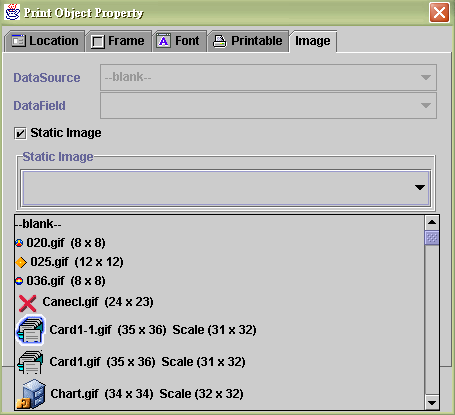
memo : 如果不選擇 datasource 的話, 就可以使用 static file,（二選一 ）所要使用的檔案，必須放在相對路徑的..\class\doc 底下，便可使用Static File 選擇檔案
DataSource : 選擇資料來源
DataField : 選擇一個欄位連接到印表元件
Static File : 選擇要列印的檔案，目前支援 .txt 、 .rtf 與 .html等資料格式的檔案
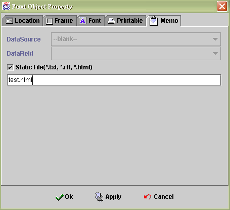
Chart : 列印統計圖元件, 選擇一個視窗裡的統計圖元件。Chart元件都需先在視窗畫面擺放同樣的元件，再將視窗產生的結果印出來
Chart Component : select the component
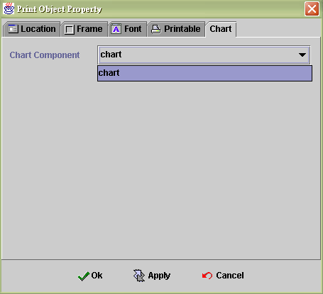
Content : 條碼內容
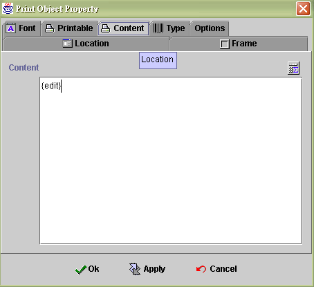
Type : 目前支援十八種種類
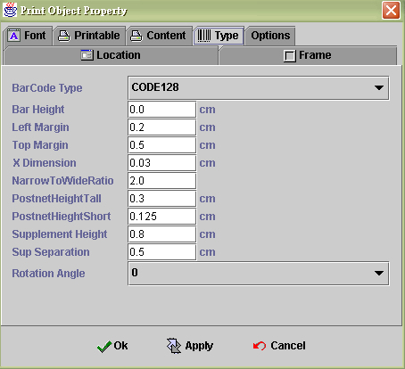
Option : 當選則某 一類型條碼時, 可以依照內定規格選擇列示型態
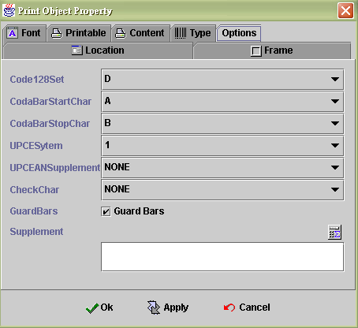
6.4.6 Page Break component 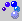
跳頁時機 :
Print out constraint : 跳頁元件是依運算式的結果來判斷是否跳頁列印。此元件與所擺放的位置無關，所以PageBreak元件可擺在報表任何位置，每移動一筆資料時都會判別跳頁時機，在同一張報表可放置多個PageBreak元件
|
|
|
|
Copyright © 2001~ 2004 Probe.com.tw . All Rights Reserved.
Questions, comments, and suggestions to Service@probe.com.tw